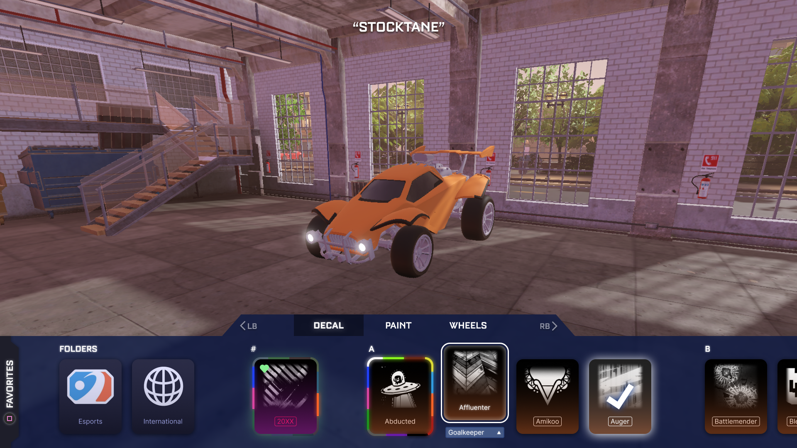
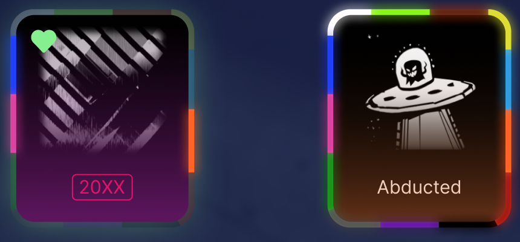
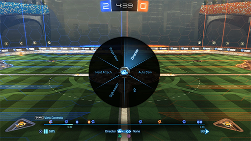
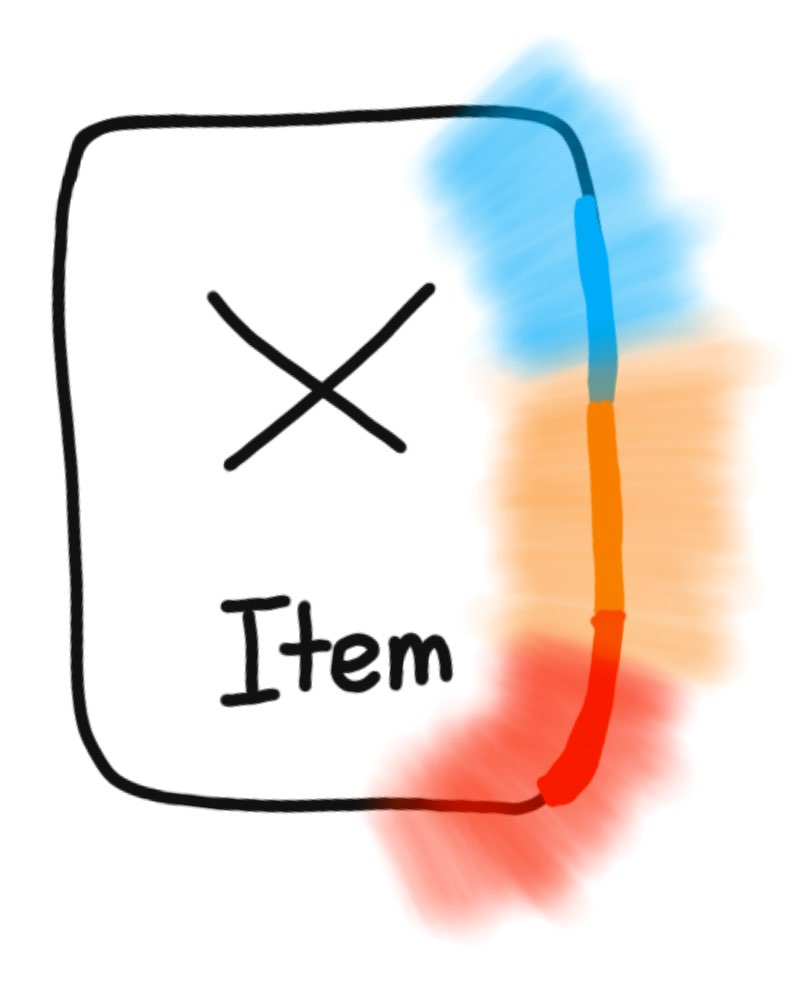
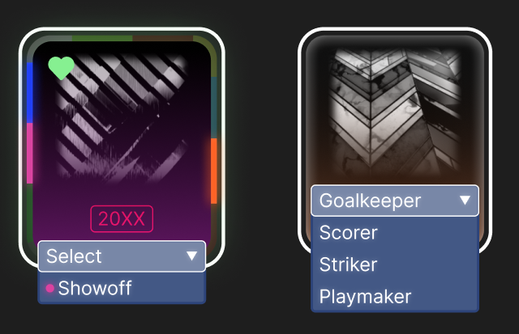
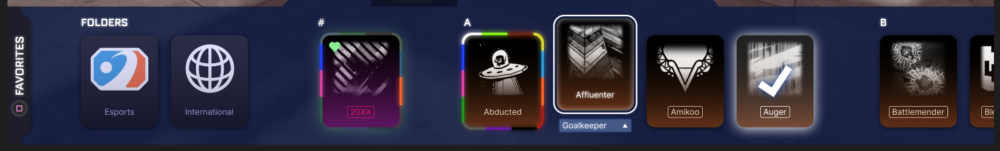

For the most part, I kind of just made the design. There is a survey which informed an important decision that you'll see, but besides that I just went with my gut feeling for all of the design on this. It's easy to get caught up in ideation, so I wanted to see what I could make if I just went for it.
Condensing the inventory
Functionally, the biggest difference I made is that painted and certified items get put into one card, where as before, they took up many slots as seen in the first inventory screenshot from above.

Painted Items

Left: An item that only has the blue, pink, and orange painted available.
Right: An item that has all painted colors available.
Painted cards are radial menus with areas active respective to the colors available. To select a color, the player holds the select button and moves the joystick in the direction of the color.
The picture on the right is a similar UI function that Rocket League already has in the replay mode.

It's hard to say how this would affect usability when all colors are available to choose from because there would be a small window for selection. However, players rarely have all colors of one item at the same time - especially of items that they use frequently.

In the majority of cases, this means that the selection windows could be modified to be larger than the visual representations like shown above. (transparent is selection hitbox and solid is visual mark from above)
End Effect
By placing colors in a consistent matter around the outside of the item, players can commit their favorite colors to muscle memory so it's easy to select each time. It's also much easier to see at a glance which colors you do and don't have because it's consistent and there is a smaller area of the screen you need to scan (one card compared to 13 if you have them all).
Another big difference is that there is a sense of progress when it comes to collecting all of the colors for an item. Currently, you only see what you do have, but with this design you can also point out the colors you don't have and feel the satisfaction of completing the ring on the outside.
Certified Items

Left: The pink dot next to "Showoff" indicates that the certification is tied to the pink-painted decal.
Right: The player is only has certified versions of the decal so they are forced to pick one if they don't want the default.
If you have a keen eye, you may have noticed some items in the original screenshot had a box around them while others didn't. The box (also seen on the "20XX" directly above) indicates that there is a certification available for the item. Although it probably won't be important to many players, it made sense to give it some visual indication since there was one for painted versions. It would also seem odd to have to select an item to see if it comes certified or not.
More Navigation

Items in Rocket League are already sorted alphabetically, but it's easy to get lost where you're at. I added extra separation between each letter in the alphabet so it breaks it up a little more and makes the inventory easier to process. I also imagined that you could use the right/left triggers to navigate through each letter: right trigger skipping one letter to the right, and vice versa. This means it would only take 26 "steps" to reach the end of the inventory which is faster than dozens of rows in current flooded inventories.
Being able to scroll through the inventory...
is not only more efficient when trying to find a specific item, but it also makes the experience more relaxed. Because the player doesn't need to worry about scrolling through a block of 27 duplicate wheels, they can look at the car when finding wheels instead of looking back at the item cards on the bottom each 10 seconds to find the next one that's different.
Since scrolling through is more enjoyable, it creates a more exploratory experience which coincides with the mental model I wanted for players treating car customization.